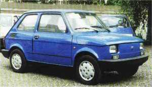
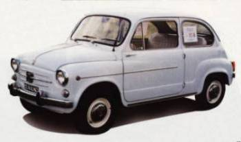

Popularny "maluch" miał zmotoryzować Polskę. l choć nie zaprojektowano go na auto rodzinne, musiał spełniać taką rolę, jako jedyny dostępny wielu Polakom samochód. Dziś trudno sobie wyobrazić polskie drogi bez najmniejszego z Fiatów. W latach siedemdziesiątych produkcja Polskich Fiatów 125p szybko rosła, ale na kupno auta trzeba było czekać miesiącami. Pomyślano więc o samochodzie dla Kowalskiego, który dzięki niskiej cenie zmotoryzowałby kraj. Wybrano znów FIAT-a, którego propozycja najbardziej odpowiadała ówczesnym prominentom.
A cóż w tym czasie działo się u FIAT-a w Turynie?Fiat Nuova 500
Po wielkim sukcesie Topolino ,Dante Giacosa w 1953 roku rozpoczął prace na następnym małym samochodzikiem dla ludu. I tak w lecie 1957 roku odbyła się kolejna premiera FIAT - a czyli Nuova 500. Autko miało silnik o pojemności skokowej 479 ccm, rozwijał prędkość 85 km/h i zużywał 4,5 l. paliwa na 100 km. W okresie 1957 - 1975 wyprodukowano aż 3.678.000 tych samochodzików. Fiat Nuova podlegał przez ten czas wielu modernizacjom, chociażby późniejszy Fiat 600D, ale nie będę się tyle o tymFiat 600 rozpisywał.
Dlaczego w ogóle trzeba wspomnieć o tym modelu - o tym za chwilę...
29 października 1971 r. podpisano umowę, która przewidywała uruchomienie w Polsce produkcji samochodu małolitrażowego Polski Fiat 126p. W ten sposób w Bielsku-Białej, w miejsce produkującej Syreny Wytwórni Sprzętu Mechanicznego, powstała Fabryka Samochodów Małolitrażowych. Oficjalny pokaz nowego, polskiego malucha odbył się w Warszawie 9 listopada 1972 roku. Pierwsze, montowane jeszcze z podzespołów Fiat 600 włoskich, popularne do dzisiaj maluchy, opuściły fabrykę latem 1973 r. W trakcie kolejnych lat produkcji Fiaty 126p byty kilkakrotnie modernizowane. Pierwsze poważniejsze zmiany wprowadzono w 1977 roku. Pojawiły się wtedy auta z silnikiem o pojemności 650 ccm. (dotychczas 600 ccm). Prądnicę zastąpił alternator, a wygląd samochodu poprawiły zderzaki z tworzywa sztucznego. Kolejnej modernizacji maluch doczekał się dopiero w 1984 roku, gdy do produkcji trafiła wersja face lifting". Wyróżniały ją szersze zderzaki, nowe listwy boczne. Wnętrze wyposażono w inną deskę rozdzielczą, koło kierownicy i tapicerkę.
Trzy lata później powstał Fiat 126 Bis. Auto wyposażono w nowy, chłodzony cieczą silnik o pojemności 703 ccm, leżący nad tylną osią auta. Dzięki temu udało się jeszcze wygospodarować nad nim dodatkową przestrzeń na bagaż. Dostęp do niej umożliwiały duże, trzecie drzwi i rozkładane oparcia tylnej kanapy. Po kolejnej modernizacji w 1994 roku Fiat 126p el produkowany był aż do roku 2000. W 1987 roku podpisano kolejny kontrakt z FIAT - em ale to już nie była licencja tylko olbrzymia inwestycja wielkiego zagranicznego koncernu w Polsce - budowa od zera wielkiej fabryki samochodów. Zanim doszło do podpisania kontraktu z FIAT-em w 1987 roku, długo zastanawiano się, wybrzydzano, poszukując partnera dla polskiej fabryki. Z całą pewnością miał to być partner, który wraz z nowoczesną technologią zapewni rynki zbytu, no i przede wszystkim, perspektywy produkcji na dobrym poziomie przez długie lata. Ostatecznie zwyciężyły argumenty FIAT-a, a więc przede wszystkim solidne kredyty i obietnice włączenia FSM do wielkiego koncernu. Ostatecznie umowa o powstaniu nowej spółki motoryzacyjnej podpisana została 28 maja 1992 r. FIAT ma w niej 90% udziałów, a FSM przejął kierownictwo nad obecną produkcją samochodów oraz niektóre zakłady związane z produkcją zespołów i elementów. Po raz pierwszy w historii polskiej motoryzacji zdarzyło się, iż renomowany zachodni partner rozpoczyna u nas od zera produkcję nowego pojazdu, przeznaczonego w pierwszym rzędzie na jego własny rynek. Obecnie FIAT jest największym producentem samochodów na naszym rynku i jego wyroby są najlepiej Polakom znane. W 1998 roku bielskie i tyskie zakłady wyprodukowały łącznie prawie 340 tysięcy samochodów. Najwyższą, co najmniej europejską jakość produkcji osiągnęły zakłady, które w dotychczasowej historii nie mogły uporać się nawet z ,,maluchem"... A jednak..